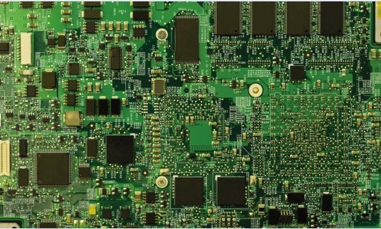
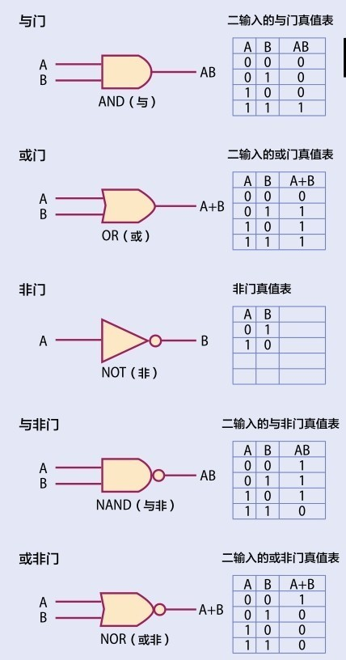

以0和1作为基本数码的二进制的引入，促使计算机数字化，而信息论作为数学的一个分支正是以这种方式处理计算机文件、电子邮件和网络问题的。
一台数字计算机由复杂的开关集合控制，所有的开关都被连接到一个电路中。计算机程序控制这些开关在开启和闭合之间转换，其中设计的指令和规则使计算机处理一定的输入就得到人们期望的输出。这可能就像先输入数字，再输出它们的和一样简单，也可能像先输入一段存储代码，然后在屏幕上输出一个电视节目或视频游戏一样复杂。
数字化
一个开关只有两种可能的状态：开或者关。因此，可以用两个字符来表达开与关这两种状态：用0表示关的状态，用1表示开的状态（见第130页：二进制与其他进制）。计算机程序被编写成（或被转化为）一系列0和1组成的字符串。在计算机处理器内，这些字符串被转化为电路接通电流运行的状态（1）或电路断开的状态（0）。

计算机主板由大量电子元器件组成，这些元器件均以二进制语言处理信息。
耗热真空管
在数字化计算早期，交换机都是由热离子真空管制成的，它们是类似于灯泡的玻璃真空管。在运行过程中，这些真空管热耗散严重，需要消耗大量的能量。另外，虽然二进制代码被用来控制处理器，但早期的计算机科学家常使用更大基数的计数来处理输入和输出。这是因为，二进制数串非常长，电路需要大量耗能显著的真空管，而使用其他基数计数可以节省大量能源。
奇偶校验位
信息理论把所有信息均转化为0和1组成的字符串。无论是一个计算机程序，或一张图片，抑或一份文本文档，最终都会被转化为用0和1字符串表达的信息。数字代码可以比其他通信形式更高效地发送信息，但其中还是会存在一些错误信息。所以，代码串可以包含一个错误测试，以分辨出错误。奇偶校验法就是其中一种测验方式。它包含一种简单的模运算算法，以确认接收到的信号与发送的信号完全相同。
A方欲传送的信息:1001
A方计算此条信息的奇偶校验码:1+0+0+1(mod2)=0
A方将奇偶校验码附于信息末尾发送出去:10010
B方接收到的信息:10110
B方计算此条信息的奇偶校验码:1+0+1+1(mod2)=1
由上述计算，B方断定信息接收发生错误，要求A方重新发送信息。
冷硅材料
第一批晶体管是1947年发明制造的。这些是基于硅材料的“电子”开关。它们没有像普通开关那样可开合的部件，而是利用硅材料的性质，使晶体管或变成传输电流的导体，或变成阻挡电流的绝缘体。晶体管和类似的电子元器件比真空管小得多，能耗也少，而且能很快组装出更为复杂的电路，因此最终成为现代计算机中的微芯片。
回到二进制计数
基于硅片的计算机完全使用二进制运行。不仅处理器用1和0的运算控制，其他所有部件都是。这主要归功于美国数学家、工程师克劳德·香农的工作。在1937年，年仅21岁的他发表了其硕士论文，内容是布尔代数（见第137页）如何可以被用来设计一台基于二进制计数的物理“逻辑机器”。这个工作比第一台真正意义上的数字计算机的出现要早近10年。因此，香农的这一工作被称为“20世纪最重要的硕士论文”。
逻辑门
计算机的电子开关形成了被称为门的简单电路。每个门被设计为执行布尔代数的一种运算。提醒一句，布尔代数仅处理1和0的运算，其结果也只能是0或1。一个特定门的所有可能的输入和输出都罗列在真值表上，这种方式由哲学家发明，现在却为计算机科学家们广泛使用。
位与字节
“bit”（位）是binary digit（二进制数字）的英文缩写。1位就是一条信息，可以用0或1表达。位这个词第一次正式出现是在克劳德·香农于1948年发表的文章中，但它其实在更早的时候由数学家约翰·塔基创造。位用二进制计数：4位（22）是半字节；8位（23）是1字节。早期的计算机处理的信息是以8位（或1字节）为单位的字符串，现在则使用更大信息量的单位。下面列举了一些计量单位。谷歌的数据中心存储了大约15艾字节的信息。
Bit（比特，位） b —
Nibble（半字节） nb 4bits
Byte（字节） B 8bits
Kilobyte（千字节） KB 210bytes
Megabyte（兆字节） MB 220bytes
Gigabyte（吉字节） GB 230bytes
Terabyte（太字节） TB 240bytes
Petabyte（拍字节） PB 250bytes
Exabyte（艾字节） EB 260bytes
开创信息理论
第二次世界大战的动荡结束之后，香农在1948年发表了另一篇文章，该文被称为信息时代的“大宪章”。文中香农开创性地提出用二进制字符串存储和传输所有信息的思想，超前了那个时代这方面的一般认知足足50年。
模拟波
尽管香农在数理逻辑和信息理论方面的工作导致了计算机革命和万维网的创建，但在早期，他主要的精力集中在研究承载语音信号的电话网络上。电话网络由大量的铜导线纵横交错于世界各地，通过海底电缆穿越海洋。沿着电线传送携带模拟信号的调制载波。调制方式或持续上升或下降，正是这些调制传递了信息。沿着电线传输的过程中，模拟信号越来越弱，所以不得不每隔一段时间放大一下信号。但是，系统在放大了信号外，也增强了“噪声”，或是在电线中形成了非信号波。这种噪声经常会淹没传送的信息。
美国数学家克劳德·香农也是人工智能的先驱。在一次会议上，他展示了他自己制造的一只名叫特修斯的老鼠，这不是鼠标，而是一只可以自我学习走迷宫的机械鼠。

上图是计算机中使用的5种主要的布尔逻辑门和真值表，它们显示了逻辑输入与输出的结果。
分组交换
网络传输并不需要把两台机器直接连接，以发送信息，取而代之的是一种称为分组交换的技术。它将用户传送的数据按一定的长度划分，每个部分叫作一个分组，通过分别独立传输分组信息的方式传输信息。每个分组都有一个设置了编码的“分组头”，用以表示其归属的原始数据。
数字化革命
香农的工作表明数字信号不光更易于处理，而且，因为它们只是简单的数字字符串，所以它们携带的信息能被各种媒介压缩、传输和存储。
参见：
▶素数，第58页
▶二进制与其他进制，第130页